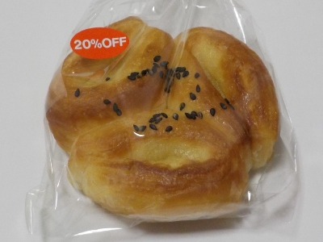
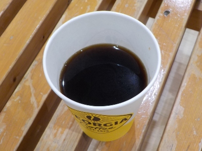

島根県物産観光館のミニ芋デニッシュはサツマイモあんが入ってました。
更新日 : 2026/11/03

小さいサイズのデニッシュパンにサツマイモあんが入ってました。観光地なのでこれくらいの小さいサイズが丁度いいかな。沢山食べたい人は同じ施設内の一福のお蕎麦食べればいいかな。
同一施設内で色々選べるのはいいですね。地元の人はあまり行かないと思うけどオススメな場所です。
今日は110円のパンが20%引きで88円でした。
島根県松江市殿町191
更新日 : 2026/11/03

小さいサイズのデニッシュパンにサツマイモあんが入ってました。観光地なのでこれくらいの小さいサイズが丁度いいかな。沢山食べたい人は同じ施設内の一福のお蕎麦食べればいいかな。
同一施設内で色々選べるのはいいですね。地元の人はあまり行かないと思うけどオススメな場所です。
今日は110円のパンが20%引きで88円でした。
更新日 : 2026/11/03

コーヒーの味なので好き嫌いはあると思いますが、私には合ってました。あんまりないけど松江城付近に行った帰りは寄って飲もうかな。
他のジョージアカフェがある近くの場所がわかるといいんだけど、ネット検索で私は見つけることが出来ませんでした。大きい施設に行った時はジョージアカフェの自動販売機がないか探そうかな。